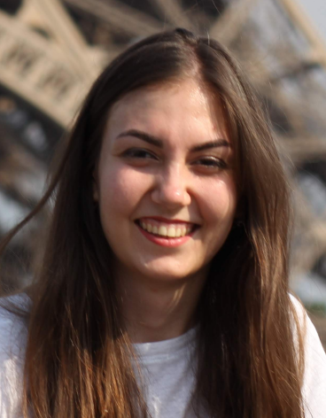

<div class="container">
    <div class="row">
        <div class="col-sm-4">

<center>


<h1 class="h4"> Ekaterina (Katya) Noskova </h1>
<p>PhD in Engineering</p>
<p>
<a class="text-dark" href="https://www.unifr.ch/bio/en/research/bioinformatics/wegmann.html"> Postdoc Researcher </a> <br>
<a class="text-dark" href="https://www.unifr.ch"> University of Fribourg </a> <br>
</p>
<p>
    <span class="fa fa-map-marker" aria-hidden="true"></span> Zürich, Switzerland
</p>
<p>
<a  class="text-dark"  href="https://scholar.google.com/citations?user=1Mlxh7wAAAAJ&hl=en">
{% include social_icons/google-scholar.svg %}
      </a>
<a  class="text-dark"  href="https://github.com/noscode">
{% include social_icons/github.svg %}
      </a>
<!--
<a  class="text-dark" href="https://www.facebook.com/ekaterina.noskova.1675/">
{% include social_icons/facebook.svg %}
      </a>
-->
<a  class="text-dark" href="https://twitter.com/kate_e_noskova">
{% include social_icons/twitter.svg %}
      </a>
<a  class="text-dark" href="https://t.me/enoskova">
{% include social_icons/telegram.svg %}
      </a>
<!--
<a  class="text-dark" href="mailto:ekaterina.e.noskova@gmail.com">
{% include social_icons/gmail.svg %}
      </a>
-->
<a  class="text-dark" href="https://docs.google.com/document/d/1llL1UnAyGb7qaDCdmXz4d600bDfb5H630ta2niz2_JE/export?format=pdf">
{% include social_icons/CV.svg %}
      </a>

</p>
</center>
</div>
<div class="col-sm-8">
<div>
<h2 class="h2"> About </h2>
<p>I'm a researcher and developer specializing in employing advanced computational techniques to analyze genetic data and unravel the evolutionary history of species and populations. My&nbsp;expertise lies in computational population genetics, mathematical modeling, and optimization algorithms. Notably, I've led the development of <a class="text-dark" href="github.com/ctlab/GADMA"> GADMA </a>, an easy-to-use software for automatic demographic inference. When I'm not diving deep into genetic data, you might catch me doodling bunnies demonstrating demographic history or other quirky illustrations for my presentations. You can check out these humorous additions on my website along with my research work.
</p>
<p>
Currently, my projects encompass a diverse array of topics, ranging from demographic inference and the inference of selection to conservation efforts for endangered species. I am also proud to be a part of the <a class="text-dark" href="https://github.com/popsim-consortium">PopSim</a> consortium — a community-driven effort to standardize population genetics. My passion lies in exploring the intricate dynamics of evolution and genetics, and I'm always eager to connect with like-minded individuals for discussions and potential collaborations (feel free to email me). Thanks for stopping by!
</p>

<h3 class="h3"> Education </h3>
<p>
<strong>2018</strong> — <strong>PhD in Engineering (Mathematical Modelling)</strong>, Department of Information Technologies and Programming, <i>ITMO University</i><br>
<strong>2018</strong> — <strong>MSc in Algorithmic Bioinformatics</strong>, Department of Mathematics and Information Technology, <i>St. Petersburg Academic University of RAS</i><br>
<strong>2016</strong> — <strong> BSc in Applied Mathematics</strong>, Department of Mathematics and Mechanics, <i>St. Petersburg State University</i></p>
<h3 class="h3"> Research interest</h3>
<p>
<strong>Mathematical modelling</strong>. Model selection problem, Hidden Markov Model<br>
<strong>Optimization problems</strong>. Evolutionary algorithms, Bayesian optimization<br>
<strong>Population genetics</strong>. Demographic inference, Population structure, Selection
</p>
</div>
        </div>
    </div>

</div>
